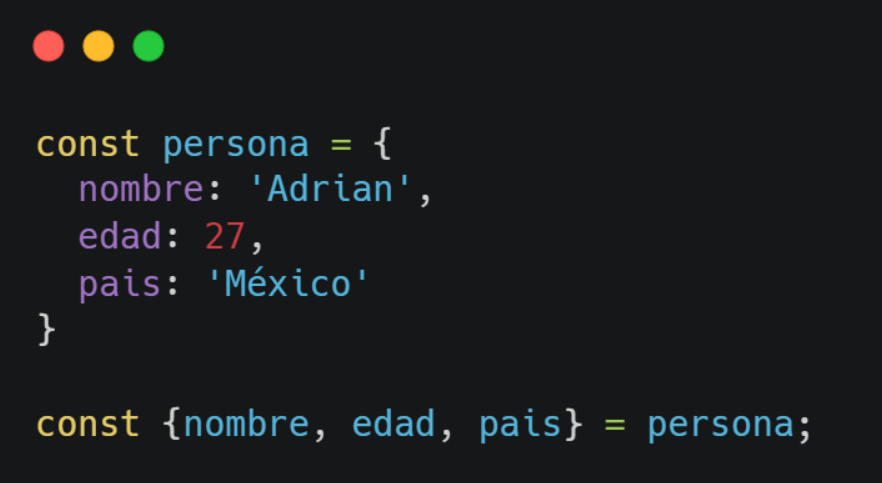

Destructuring Objects en JavaScript
¿Qué es Destructuring Objects?
Destructuring es una característica de JavaScript que permite extraer propiedades de un objeto o valores de un arreglo y asignarlos directamente a variables de forma sencilla y limpia.
